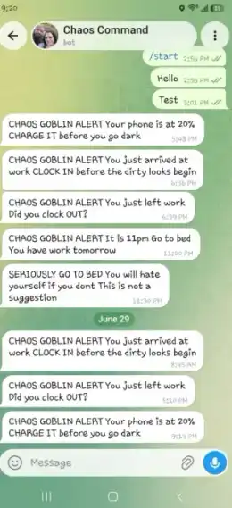
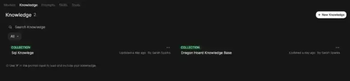
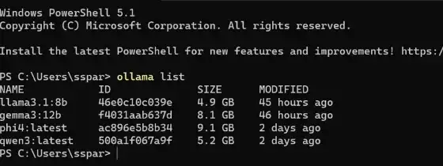

Reminder trigger
Tasker watches a 400m workplace geofence and sends the relevant clock-in or clock-out alert through Telegram when the location event fires.
A self-hosted local AI workspace paired with a practical mobile automation: Tasker sends clock-in and clock-out reminders through Telegram, while Docker-hosted Open WebUI and Ollama provide local LLM access and RAG knowledge collections without relying on a cloud AI provider for inference.
The automation side uses Tasker as the phone-side trigger and Telegram as the notification layer. The AI side runs locally through Docker-hosted Open WebUI, Ollama models, and RAG knowledge collections.
Tasker watches a 400m workplace geofence and sends the relevant clock-in or clock-out alert through Telegram when the location event fires.
Docker runs Open WebUI alongside a separate n8n container, giving each service its own port, lifecycle, and debugging surface.
Open WebUI fronts Ollama, which runs Llama 3.1 8B, Gemma 3 12B, Phi-4, and Qwen3 locally.
Clean screenshots from the live local setup show the Telegram reminder output, container host, RAG collections, and local model inventory.

| Status | Name | Image | Port(s) |
|---|---|---|---|
| Running | n8n | n8nio/n8n | 5678:5678 |
| Running | open-webui | open-webui | 3000:8080 |


A Tasker geofence profile watches for entry and exit from a 400m workplace radius.
When the location event fires, Tasker sends the appropriate clock-in or clock-out message through a personal Telegram bot.
Docker runs Open WebUI and a separate n8n workspace as independently managed containers on the same host.
Open WebUI fronts a local Ollama installation with Llama 3.1 8B, Gemma 3 12B, Phi-4, and Qwen3. Two RAG knowledge collections support grounded project-specific queries.
Used Tasker geofencing and Telegram API calls to turn a real-world location event into a useful reminder system.
Ran Open WebUI and n8n as sibling Docker services that can be managed, restarted, and debugged independently.
Hosted multiple local models through Ollama and Open WebUI, keeping inference on local hardware instead of relying on external AI APIs.
Built two Open WebUI knowledge collections for project-specific documents so answers can be grounded in retrieved context.
Designed, tested, and debugged phone automation, Telegram alerts, Docker containers, local services, and model hosting.
Turned a real recurring problem into an automated reminder system with clear responsibilities and useful failure boundaries.
The practical motivation was simple: I needed a reliable external prompt for clock-in and clock-out moments, especially with ADHD making routine transitions easy to miss. The result is a small but useful mobile automation that turns personal friction into a documented system.
The Telegram bot is internally nicknamed Chaos Command, but the portfolio-facing value is the engineering judgment: using the right tool for the trigger, keeping local AI infrastructure self-hosted, and separating services so each part can be tested and improved independently.